← 返回正文3.4 ELF 文件结构描述
PDF 第 91 页 · 书内第 68 页 PDF 第 92 页 · 书内第 69 页
PDF 第 92 页 · 书内第 69 页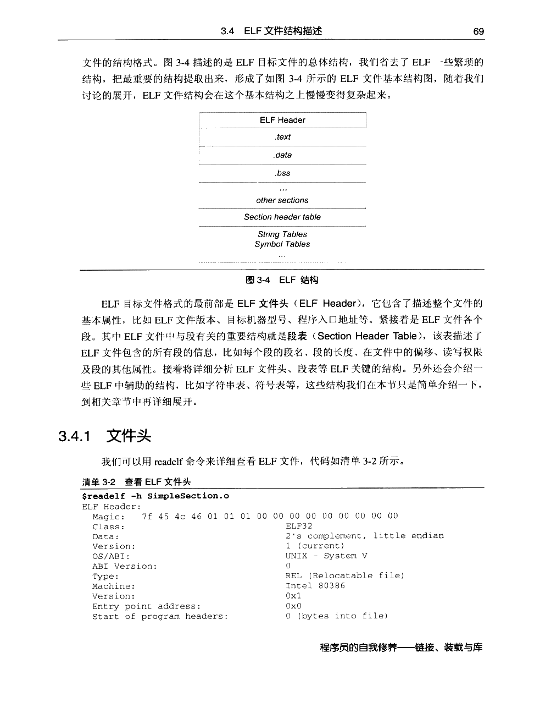
PDF 第 93 页 · 书内第 70 页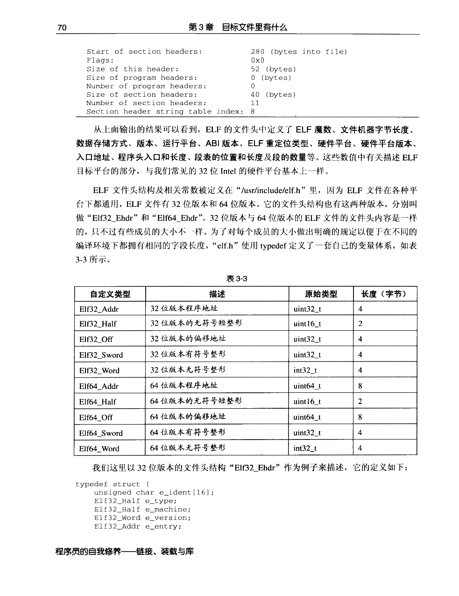
PDF 第 94 页 · 书内第 71 页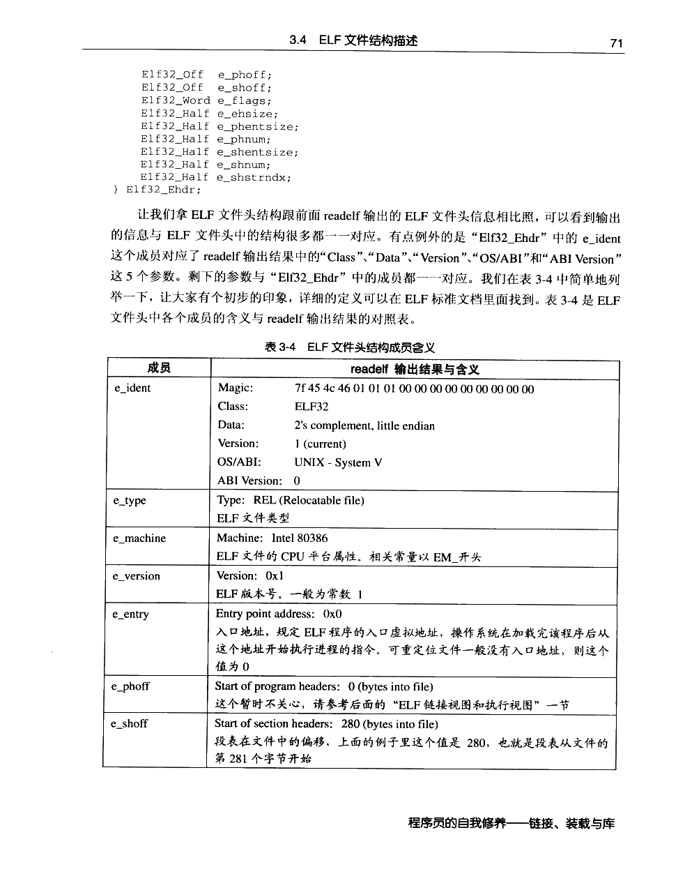
PDF 第 95 页 · 书内第 72 页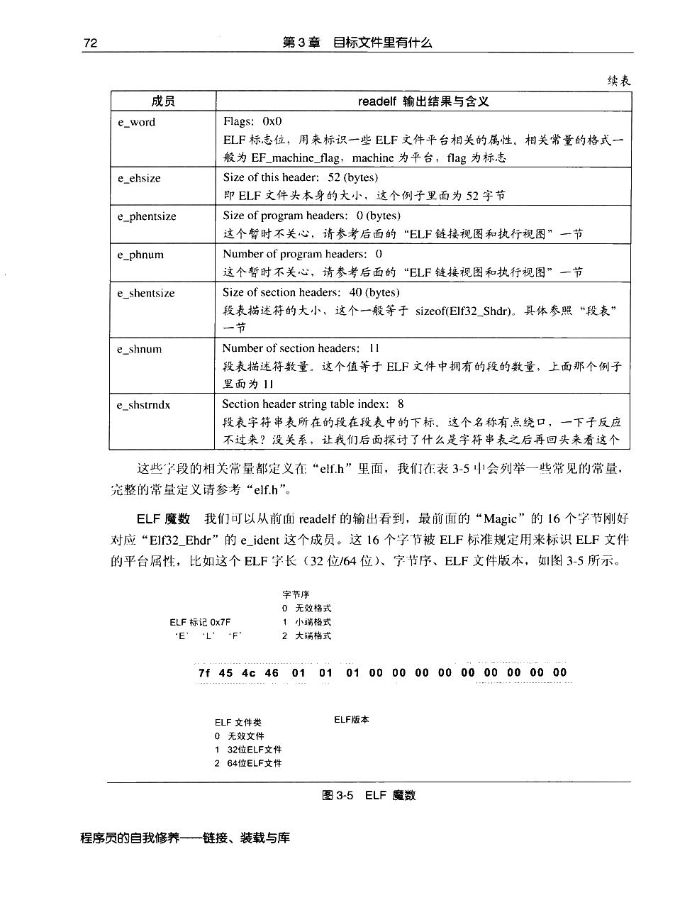
PDF 第 96 页 · 书内第 73 页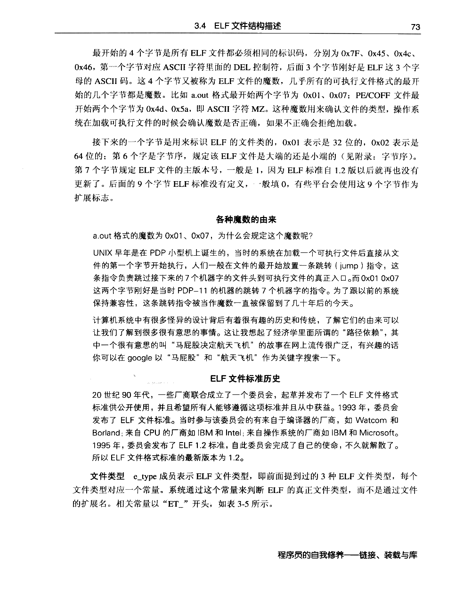
PDF 第 97 页 · 书内第 74 页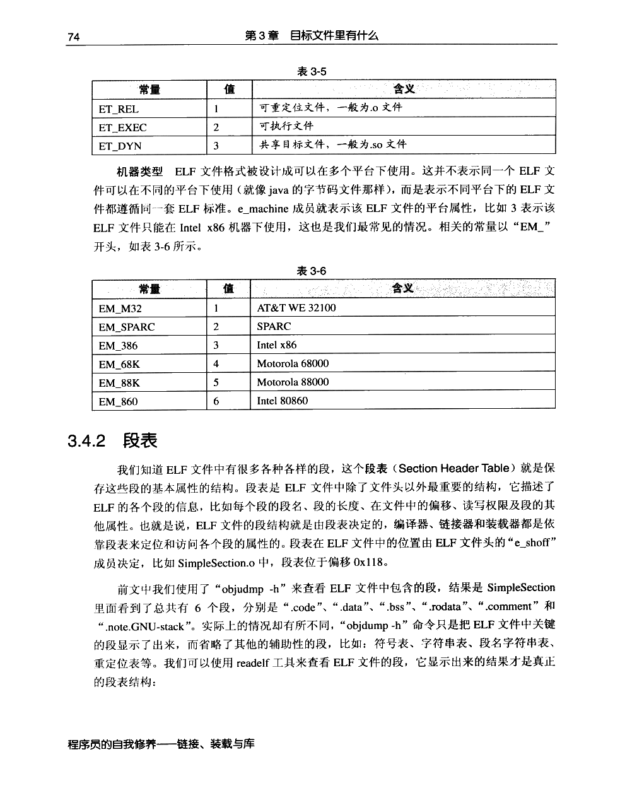
PDF 第 98 页 · 书内第 75 页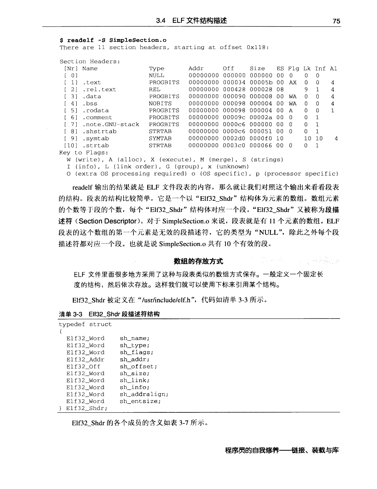
PDF 第 99 页 · 书内第 76 页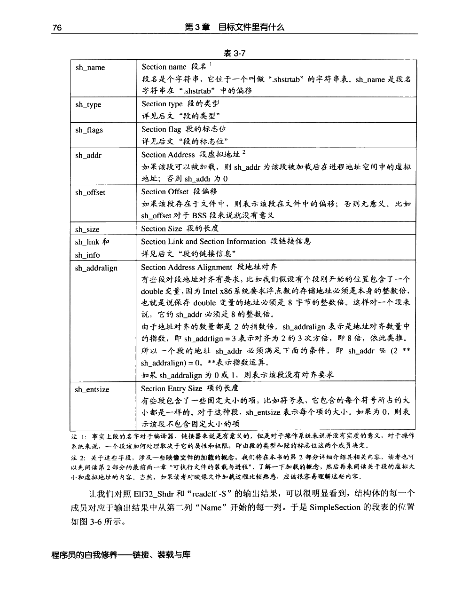
PDF 第 100 页 · 书内第 77 页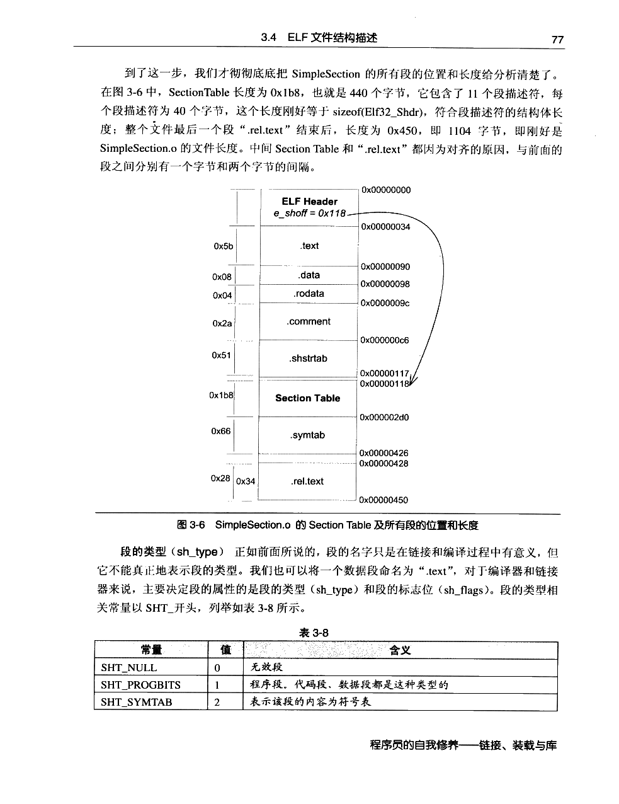
PDF 第 101 页 · 书内第 78 页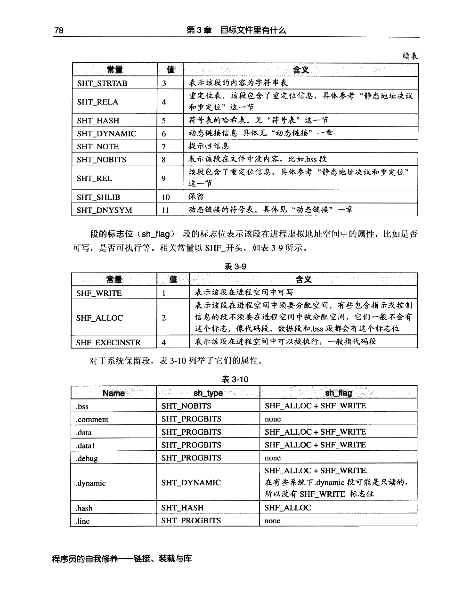
PDF 第 102 页 · 书内第 79 页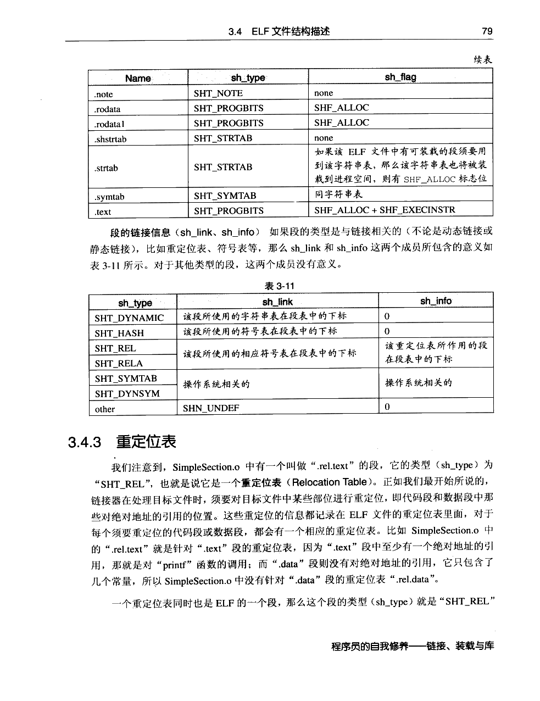
PDF 第 103 页 · 书内第 80 页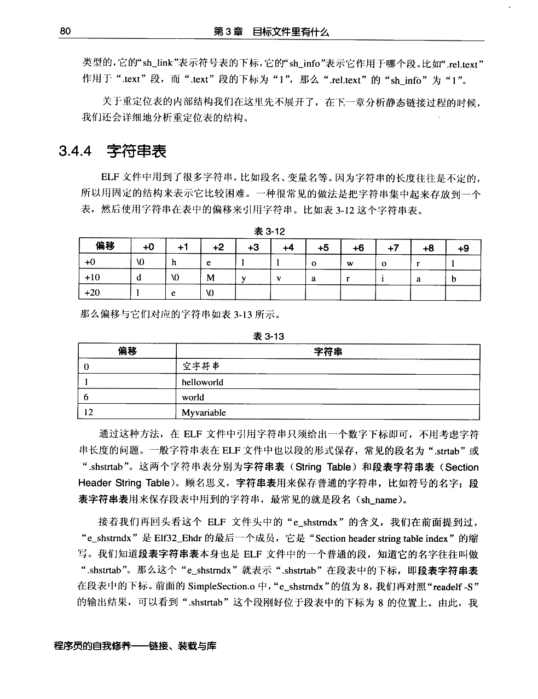
PDF 第 104 页 · 书内第 81 页